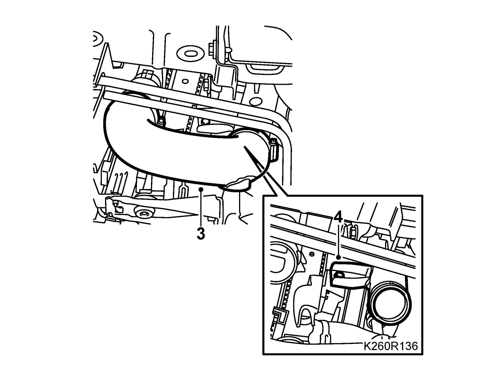
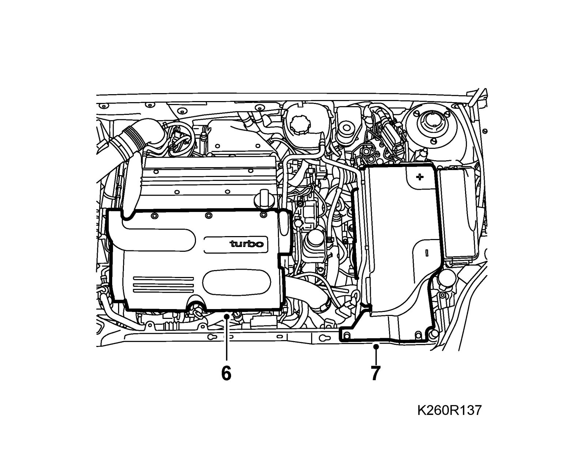
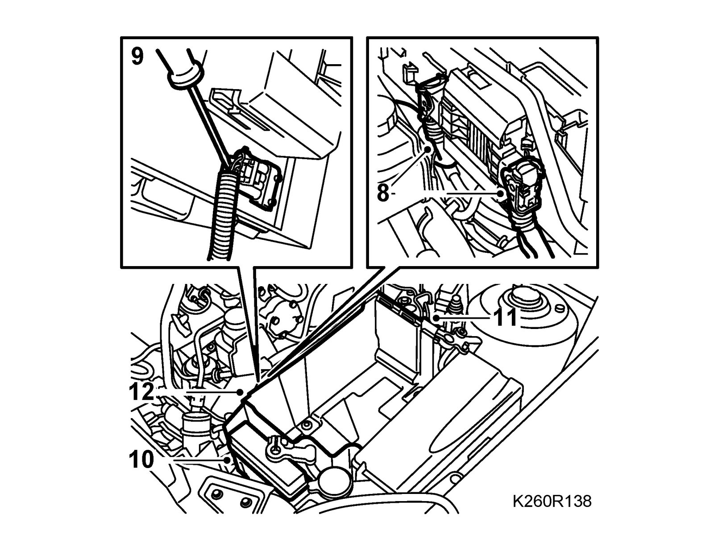
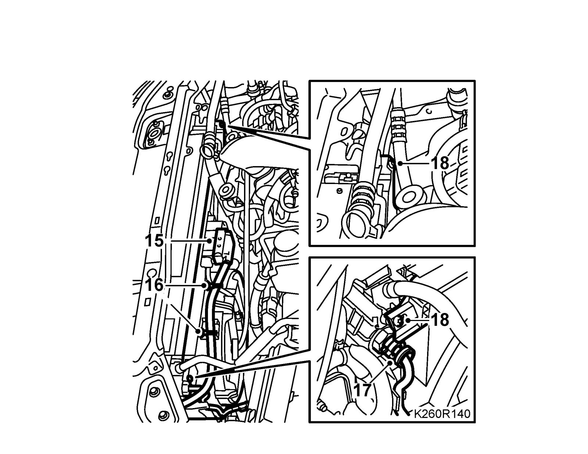
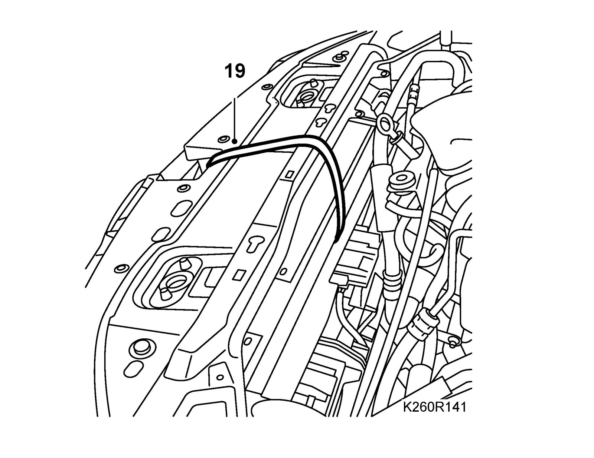
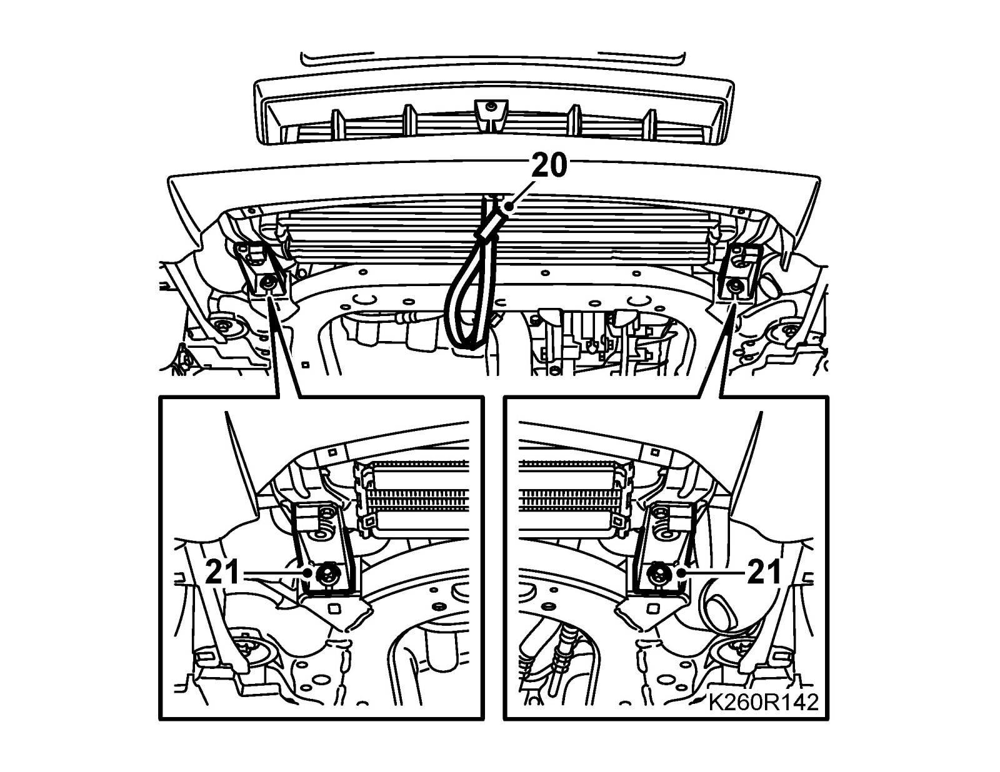
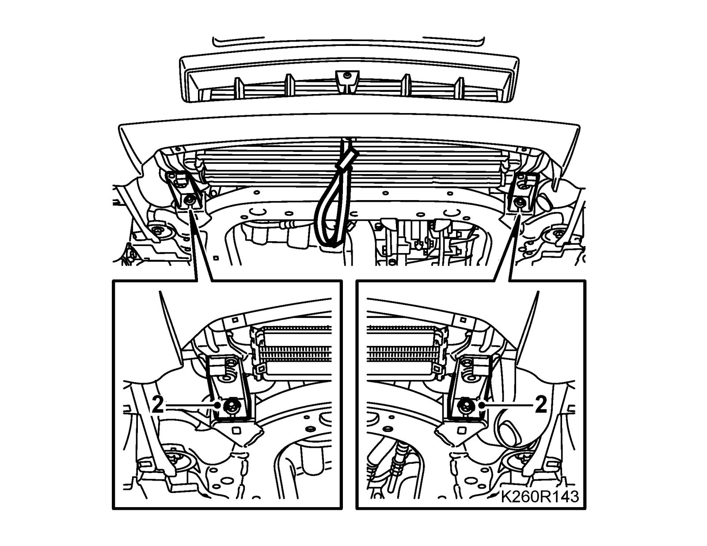
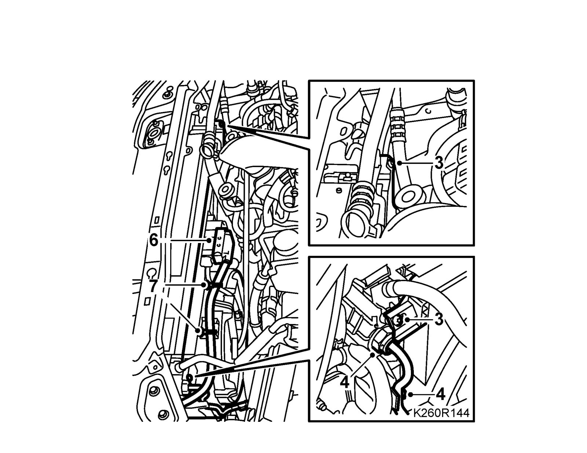
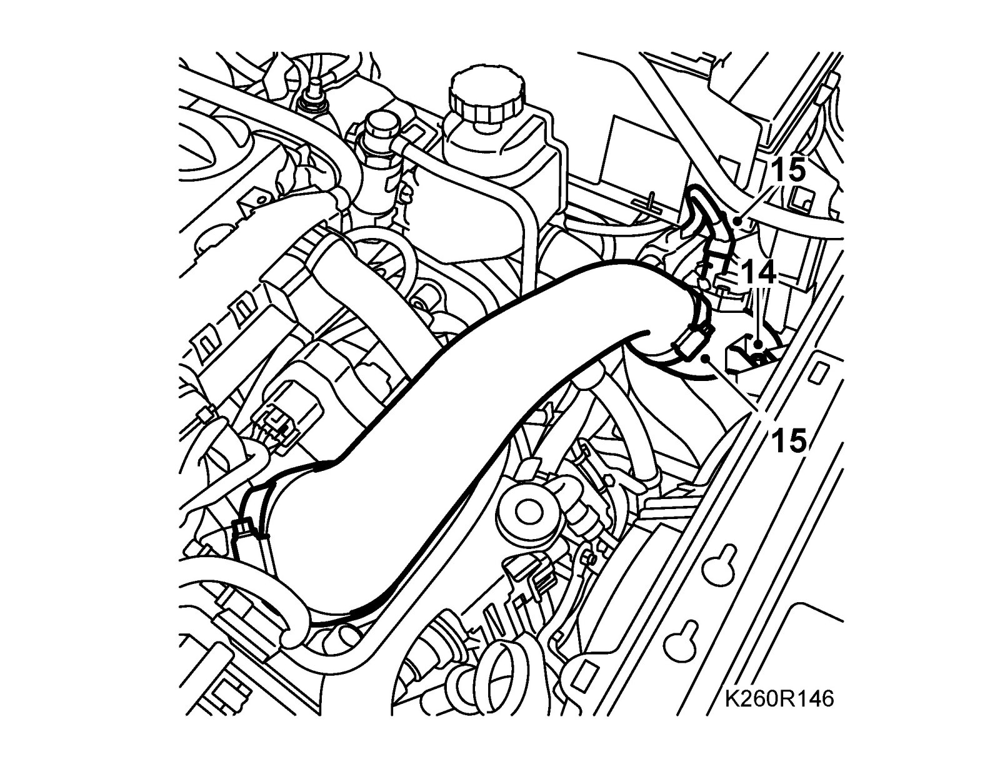
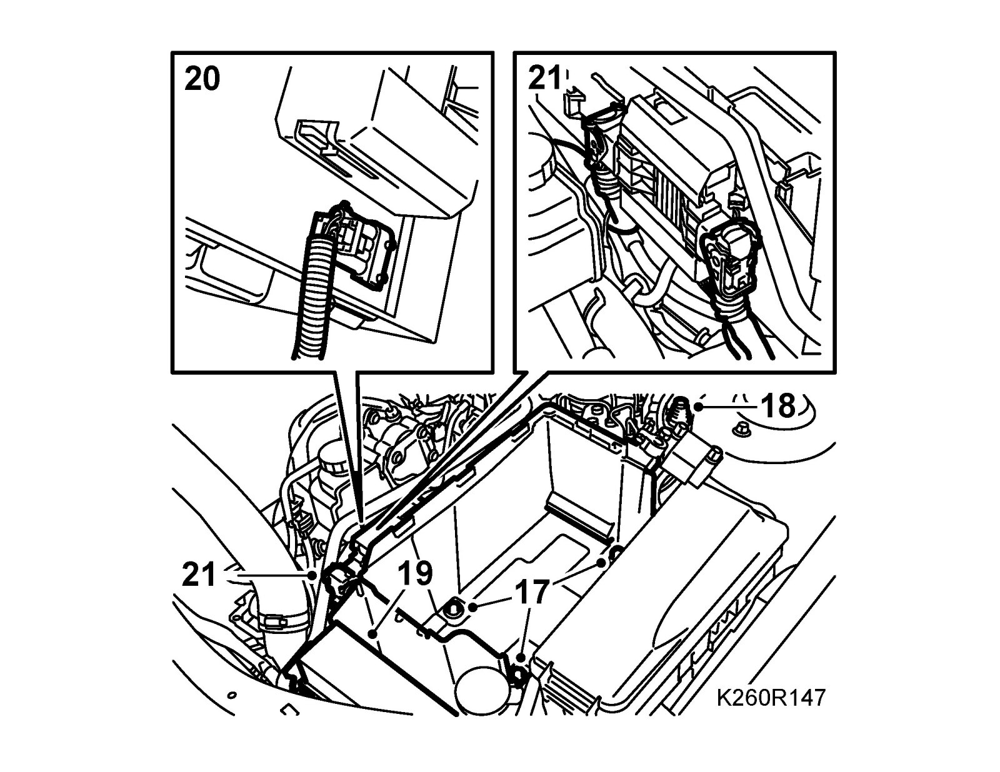

Fan Cowling, Dual Radiator Fans, B207
Fan cowling, dual radiator fans, B207To remove
1. Raise the car.
2. Remove the front spoiler shield. Undo the hose for the headlight washer and unplug and remove the connector. See spoiler shield, front, to remove.
3. Disconnect the charge air hose from the charge air pipe.

4. Remove the lower charge air pipe mounting from the fan cowling.
5. Lower the car.
6. Remove the upper engine cover.

7. Remove the battery.
8. Aut: Unplug the transmission control module connectors.

9. Release the connector fixing.
10. Press in the catch and remove the electrical centre from the battery box.
11. Unplug the bonnet switch connector and remove the battery box.
12. Undo the clip holding the cables from the battery tray.
13. Unplug the connector and detach the hose from the pressure/temperature sensor on the charge air pipe.
14. Disconnect the charge air pipe from the throttle body and the pipe's upper mounting from the fan cowling.
15. Unplug the connector from the fan cowling.

16. Disconnect the wiring from the cowling.
17. Aut: Remove the protector over the upper quick coupling, undo the oil pipe quick coupling using 87 92 806 Removal tool, oil pipe, automatic transmission and undo the upper oil pipe from the radiator. Plug the pipe and the quick coupling. Collect any oil spill. If necessary, undo the metal clip holding both the oil pipes.
18. Remove the fan cowling retaining bolts and hang a 83 95 212 Strap over the radiator member.

19. Raise the car and suspend the radiator core with the strap.

20. Remove the radiator mountings from the subframe. Lower the radiator core so that the upper radiator mountings are free.
21. Lower the car.
22. Remove the fan cowling.
To fit
1. Lower the fan cowling into position.
Important
Make sure the lower catches of the fan cowling go into their mountings. Otherwise, there is a risk that the cooling system could be damaged.
2. Raise the car and fit the radiator mountings to the subframe. Check that the upper radiator mountings are correctly positioned in the brackets. Remove the strap.

3. Lower the car and fit the radiator bolts.

4. Aut: Remove the plugs, fit the pipe to the mounting in the radiator and connect the oil pipe to the quick coupling. Check that the pipe is properly connected to the quick coupling.
5. Aut: Position the guard over the quick coupling and secure the pipe to the lower metal clip. Wipe up any spilled oil.
6. Fit the upper mounting of the charge air pipe to the fan cowling. Do not tighten the bolt to the fan cowling all the way.
7. Plug in the radiator fan connector.
8. Connect the wiring to the fan cowling.
9. Raise the car.
10. Fit the lower charge air pipe to the fan cowling.
11. Fit the hose from the charge air cooler to the charge air pipe.
12. Fit the front spoiler shield and secure the hose for the headlight washer. Fit and plug in the connector. See spoiler shield, front, to fit.
13. Lower the car.
14. Tighten the bolt for the charge air cooler to the fan cowling. Fit the charge air hose to the throttle body.

15. Plug in the connector and attach the hose to the pressure/temperature sensor on the charge air pipe.
16. Fit the cable attachment to the battery box.
17. Fit the battery box.

18. Attach the connector to the main contact.
19. Fit the electrical centre in the battery box.
20. Secure the connector to the cowling.
21. Aut: Plug in the transmission control module connectors.
22. Fit the battery, connect battery cables.
23. Attach the battery cooling pipe (certain cars).
24. Fit the battery cover.
25. Fit the upper engine cover.
26. If the battery has been disconnected, see: Procedure after reconnecting the battery.